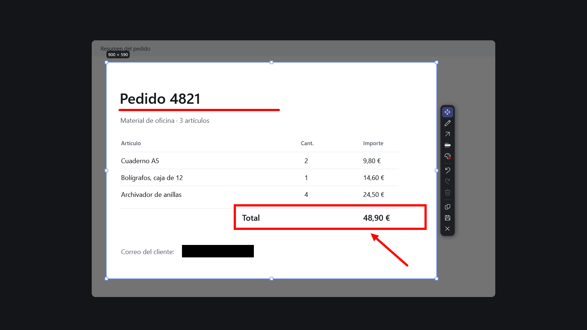

Captura, señala y censura en segundos.
Captio congela la pantalla con ImpPant, te deja marcar o tapar lo que importa y copia o guarda el resultado. Para Windows, gratis y sin conexión a internet.
Tres pasos, una sola pantalla
-
Captura
ImpPant congela todas las pantallas. Arrastra para elegir una zona; puedes moverla y redimensionarla antes de seguir.
-
Edita
Lápiz, flecha, línea, rectángulo, elipse y censura, sobre la misma captura y en cualquiera de los 8 colores.
-
Copia o guarda
Ctrl+C la deja en el portapapeles y Ctrl+S la guarda en tu carpeta de capturas. Esc cancela sin dejar nada.
Herramientas que no estorban
La barra aparece junto a la selección, centrada, en el lado que prefieras. Al abrirse está activa la herramienta de mover, para que ajustes la zona antes de dibujar.
- Seleccionar y moverMueve la zona o cualquier anotación. V
- LápizTrazo a mano alzada. P
- FormasFlecha, línea, rectángulo y elipse. Con Mayús: rectas a 45°, cuadrados y círculos.
- CensuraUn bloque negro sólido que reemplaza los píxeles. R
- Color8 colores; Captio recuerda el último. C
- Deshacer y rehacerSin límite mientras editas. Ctrl+Z · Ctrl+Y

Lo que tapas, desaparece
La censura no es una capa encima: al copiar o guardar, los píxeles se sustituyen por negro opaco y la imagen final no tiene capas. El original sin censurar nunca se escribe en disco.
- Sin redCaptio no hace ninguna conexión, ni siquiera para buscar actualizaciones.
- Sin cuentas ni telemetríaNo hay registro, nube ni datos de uso.
- PNG limpiosSolo los datos necesarios para mostrar la imagen: sin texto, fechas ni EXIF.
Tu carpeta, tus reglas
Biblioteca
Las capturas se guardan en Imágenes\Screenshots, la carpeta de capturas de Windows (o la que elijas), con nombres como los del sistema: Captura de pantalla 2026-10-30 013340.png. La biblioteca es esa misma carpeta: filtra por fecha, copia, arrastra, exporta, renombra o borra.
Personalización
- Atajo de captura configurable.
- Barra arriba, abajo, a la izquierda o a la derecha.
- Enter copia o guarda, como prefieras.
- Guardar también al copiar.
- Iniciar con Windows, sin abrir ventanas.
Atajos
| Acción | Atajo |
|---|---|
| Capturar | ImpPant configurable |
| Seleccionar · lápiz · forma · censura | V P F R |
| Menú de formas · panel de color | Mayús+F C |
| Deshacer · rehacer · eliminar anotación | Ctrl+Z Ctrl+Y Supr |
| Copiar · guardar | Ctrl+C Ctrl+S |
| Cancelar | Ctrl+X Esc |
Compatibilidad
- Sistema
- Windows 10 (1809 o posterior) y Windows 11, 64 bits
- Instalación
- Por usuario, sin permisos de administrador
- Requisitos
- Ninguno: el instalador incluye .NET
- Monitores
- Varios, con escalas distintas
Sobre el aviso de SmartScreen
El instalador todavía no tiene firma digital, así que Windows puede avisar de una aplicación no reconocida. Pulsa Más información → Ejecutar de todas formas. El código es abierto y cada versión se compila en GitHub a partir de él.
Hoja de ruta
- PendienteClips de video MP4Grabar una zona de la pantalla, sin audio. Aún no disponible.
- PendienteFirma digital del instaladorPara que Windows deje de mostrar el aviso de SmartScreen.